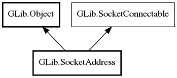

GLib.SocketAddress Reference Manual
Packages
gio-2.0
GLib
SocketAddress
family
SocketAddress
SocketAddress.from_native
get_family
get_native_size
to_native
SocketAddress
Object Hierarchy:

Description:
public
abstract
class
SocketAddress
:
Object
,
SocketConnectable
All known sub-classes:
InetSocketAddress
ProxyAddress
Namespace:
GLib
Package:
gio-2.0
Content:
Properties:
public
SocketFamily
family
{
get
; }
Creation methods:
protected
SocketAddress
()
public
SocketAddress.from_native
(
void
* native,
size_t
len)
Methods:
public
virtual
SocketFamily
get_family
()
public
virtual
ssize_t
get_native_size
()
public
virtual
bool
to_native
(
void
* dest,
size_t
destlen)
throws
Error